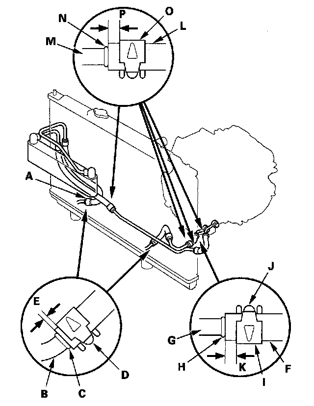

Fluid Line/Hose: Service and Repair
ATF Cooler Hose Replacement1. Slide the ATF cooler hoses (A) over the ATF cooler lines (B) until the hose ends contact with the bulge (C) of the ATF cooler line, and secure the hoses with the clips (D) at 2-4 mm (0.1-0.2 in.) (E) from the hose end.

2. Slide the ATF cooler outlet hose (F) over the ATF cooler outlet line (G) at the transmission until the hose end contacts with the bulge (H) of the ATF cooler line. Secure the hose with the clip (I) facing tab (J) up at 6-8 mm (0.2-0.3 in.) (K) from the hose end.
3. Slide the ATF cooler hoses (L) over the ATF cooler lines (M) until the hose ends contact with the bulge (N) of the ATF cooler line, and secure the hoses with the clips (O) at 6-8 mm (0.2-0.3 in.) (P) from the hose end.